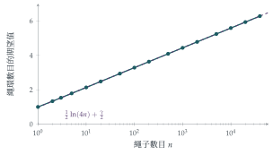

STEP III 2008，第 13 題
繼續之前，請先閱讀題目（原題為英文）。題目載於 STEP Support Programme 的題目資料庫： step.maths.org/questions/08-s3-q13
引子
把一百條繩子放進袋中，只讓繩頭露在外面。隨機選兩個繩頭綁在一起，如此重複，直至再沒有鬆開的繩頭為止。最後你會得到一堆糾纏的繩圈。究竟有多少個？一百條繩子原則上可以結成一百個小環，也可以結成一個巨大的圈。出人意表的是，繩環數目的期望值（expected number）只有約 \(3.3\)；即使有四萬條繩子，也不過約 \(6\)。
只要看出一個關鍵之處，問題便幾乎不費吹灰之力：每打一個結之後，不論剛才發生了甚麼事，箱中都只是少了一條繩子。這個過程會「忘記」自己的歷史，於是繩環的數目就變成一連串獨立（independent）擲硬幣結果之和，只是每次的概率（probability）各有不同。
動筆之前
把兩個繩頭綁在一起之後，還剩下多少條繩子（結成環的不再算作一「條」）？這是否取決於有沒有結成環？
如果兩個繩頭屬於同一條繩子，這條繩子便成為一個環，餘下 \(n - 1\) 條。如果兩個繩頭屬於不同的繩子，這兩條繩子便接成較長的一條，同樣餘下 \(n - 1\) 條。無論是哪一種情況，我們都剩下 \(n - 1\) 條繩子，每條各有兩個繩頭。
逐步解題
階段 1 第一個結
繩頭共有 \(2n\) 個。先選定一個；與它相綁的繩頭等可能地是其餘 \(2n - 1\) 個繩頭中的任何一個，而當中恰好有一個屬於同一條繩子。因此第一個結結成環的概率是 \(\frac{1}{2n - 1}\)，而第一步所產生的繩環數目的期望值就是 \(\frac{1}{2n - 1}\)。
階段 2 所有的結
根據上面的觀察，打第二個結之前的情況是怎樣的？第三個呢？設 \(I_k\) 為指示變量，表示在剩下 \(k\) 條繩子時所打的結是否結成環。各個 \(\mathrm{E}(I_k)\) 是多少？
每次打結之前，箱中有 \(k\) 條繩子，其中 \(k = n, n - 1, \ldots, 1\)，而這個結結成環的概率是 \(\frac{1}{2k - 1}\)。（最後一個結在只剩一條繩子時打，必定結成環。）繩環的總數是 \(R = I_n + I_{n-1} + \cdots + I_1\)，所以 \[\mathrm{E}(R) = \sum_{k=1}^{n}\frac{1}{2k - 1} = 1 + \frac13 + \frac15 + \cdots + \frac{1}{2n - 1}. \qed\]
階段 3 方差
各個指示變量（indicator）\(I_k\) 是否獨立？（某一步結成環的概率，是否取決於之前發生過的事？）
在每一步，不論之前發生過甚麼事，結成環的概率都是 \(\frac{1}{2k - 1}\)，因為當時的格局永遠是「\(k\) 條繩子」。所以各個 \(I_k\) 互相獨立，方差（variance）可以相加： \[\mathrm{Var}(R) = \sum_{k=1}^{n}\frac{1}{2k - 1}\Bigl(1 - \frac{1}{2k - 1}\Bigr) = \sum_{k=1}^{n}\frac{2k - 2}{(2k - 1)^2}. \qed\]
階段 4 四萬條繩子
試用調和數（harmonic numbers）表示直至 \(2n - 1\) 為止所有奇數的倒數之和。
把直至 \(2n\) 為止所有正整數的倒數之和，減去其中偶數的倒數之和，便得 \[\sum_{k=1}^{n}\frac{1}{2k - 1} = H_{2n} - \tfrac12H_n \approx \ln(2n) - \tfrac12\ln n = \tfrac12\ln(4n).\] 當 \(n = 40\,000\) 時，\(4n = 160\,000 = 20^4\)，所以 \(\mathrm{E}(R) \approx \frac12 \cdot 4\ln20 \approx 6\)。■ （準確值是 \(6.28\)；兩者之差來自歐拉常數（Euler’s constant），因為 \(H_n \approx \ln n + 0.577\)。）

回顧
找出過程忘記了甚麼。每打一個結之後，不論過去的經過如何，箱中都是「\(k\) 條繩子」。
又是指示變量。繩環的數目是指示變量之和，每個結對應一個。
有獨立性便有方差。由於每一步的概率都不取決於過去，各個指示變量互相獨立。
背後的數學
對數增長
繩環數目的期望值以 \(\frac12\ln n\) 的速度增長，而方差與平均值相當接近（兩者都是一些很小的概率之和）。根據中心極限定理（central limit theorem）（第 12.24 節），當 \(n\) 很大時，繩環數目近似服從正態分佈（normal distribution），平均值和方差都約為 \(\frac12\ln(4n)\)。若有 \(40\,000\) 條繩子，你通常會得到 \(2\) 至 \(11\) 個環。
隨機置換的循環
同一個對數也出現在 \(n\) 件物件的隨機置換（random permutation）的循環（cycle）數目之中：平均有 \(H_n \approx \ln n\) 個（繩子問題是它的近親，對應的是 \(\frac12\ln n\)）。隨機置換的循環很少：通常有一個巨大的循環包含了大部分元素，而最大循環所佔元素的比例，平均約為 \(0.62\)，即 Golomb–Dickman 常數。隨機地把繩子綁在一起，情況也是一樣：大部分繩子最終都落在一兩個長圈之中。這些事實屬於隨機組合結構（random combinatorial structures）的研究範圍，而這門學問又與數論（number theory）有關（一個隨機整數的質因數，其表現就像一個隨機置換的循環）。
綁繩子問題是某些物理系統的簡化模型。溶液中的長鏈聚合物分子會首尾相接，形成環和鏈，而成環的統計規律也遵從類似的法則。在紐結理論（knot theory）中，數學家問的是一個更難的問題：一個隨機的閉合圈有多大機會打了結？對於很長的隨機圈，答案趨向 \(1\)，這個結果由 De Witt Sumners 和 Stuart Whittington 於 1988 年證明。
思維技巧
如果每一步之後，系統所處的狀態只取決於已經走了多少步，那麼各步的表現便互相獨立，期望值和方差都可以直接相加。
這正是優惠券收集問題（coupon collector）（第 9.11 節）背後的想法，當中每個階段都是一次全新的幾何等待；它也在馬可夫鏈（Markov chains）的理論中再次出現，在那裏只有當前的狀態才起作用。
延伸練習
小的情況。對於 \(n = 2\)，列出所有可能情況，並驗證繩環數目的期望值是 \(\frac43\)。
一個大圈。證明整個過程最終得到單一個包含所有繩子的圈的概率是 \(\prod_{k=2}^{n}\bigl(1 - \frac{1}{2k - 1}\bigr)\)，並證明當 \(n\) 很大時，這個概率約為 \(\sqrt{\frac{\pi}{4n}}\)。（提示：找出這個乘積與 \(\binom{2n}{n}\) 的關係。）
置換的循環。證明 \(n\) 件物件的隨機置換的循環數目的期望值是 \(H_n\)，方法是逐個元素地構造這個置換（即「中國餐館」構造法）。
方差。證明 \(\mathrm{Var}(R) = \mathrm{E}(R) - \sum_{k=1}^{n}\frac{1}{(2k - 1)^2}\)，並證明被減去的那個和趨向 \(\frac{\pi^2}{8}\)。
延伸閱讀
Peter Winkler, Mathematical Puzzles: A Connoisseur’s Collection（A K Peters），書中收錄了這道綁繩子謎題。
Richard Arratia, Andrew Barbour & Simon Tavaré, Logarithmic Combinatorial Structures（European Mathematical Society）。講述循環、質數與隨機結構，可留待日後閱讀。
Colin Adams, The Knot Book（American Mathematical Society）。紐結理論入門，內容包括隨機紐結。